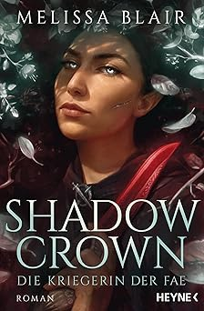
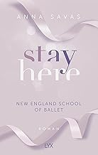

bekomme einen Blick in mein Bücherregel. Von Fanatsy über Romance bis
hin zu Selbsthilfe-Bücher ist alles dabei. Also, schau rein!
Asrai - Das Portal der Drachen
Magie, Identität und Dunkle Mächte
Liane Mars
Entgegen aller Konventionen darf die mittellose Elaja eine
Ausbildung zur Drachenreiterin beginnen. Doch ohne eigenen Drachen
zur praktischen Prüfung anzutreten, ist schwierig. Zum Glück
besitzt der nach einem schweren Flugunfall traumatisierte Ian
gleich zwei Drachen. Die beiden gehen einen Deal ein, aber schon
bald erkennt Elaja, dass Ians Drachen Geheimnisse hüten, die
besser unentdeckt geblieben wären.
Asrai –Die Magie der Drachen
Freundschaft, Kräfte und Bedrohung
Liane Mars
Elaja besitzt endlich ihren eigenen Drachen, nur ist der ganz
anders als erwartet: dominant, kriegerisch und grummelig.
Zusätzlich kämpft sie mit der in ihr erwachenden uralten Magie,
die entschlossen den Mann töten will, den Elaja liebt. Um ihn zu
retten und einen Krieg zu verhindern, muss sie die Asrai in sich
besiegen. Ein Wagnis, das die gesamte Drachenwelt erschüttert.
Asrai - Das Herz der Drachen
Entscheidung, Abenteuer und Schicksal
Liane Mars
Eigentlich will Linnea nur in Ruhe als Dorfheilerin leben.
Stattdessen wird sie an den Drachenhort gerufen, weil sie die
wiedergeborene ASRAI sein soll. Leider weiß sie nichts mehr von
ihren vergangenen Leben. Weder erinnert sie sich an Manila, den
mächtigsten Drachen aller Zeiten, noch an den Mann, den sie einst
unendlich liebte. Der hingegen weiß noch jedes Detail und setzt
alles daran, seine frühere Seelengefährtin zurückzugewinnen. Doch
Linnea ist nicht Elaja und will um ihrer selbst willen geliebt
werden. Bis sie entdeckt, dass ihr Seelengefährte ein tödliches
Geheimnis verbirgt.
Bridge Kingdom – Der Schwur der Spionin
Intrige, Loyalität und Politik
Danielle L. Jensen
Ihr ganzes Leben lang wurde Lara darauf vorbereitet, Aren, den
König des mysteriösen Bridge Kingdom, zu heiraten und
auszuspionieren, um ihrem Vater die Geheimnisse des bisher
uneinnehmbaren Reiches zu offenbaren. Doch als Lara Aren näher
kennenlernt, beginnt sie, alles infrage zu stellen, was man sie
gelehrt hat. Und je näher sie ihrem Ziel, dem Untergang des
mächtigen Bridge Kingdom, kommt, desto mehr verliebt sie sich in
dessen mysteriösen König. Nun muss sie sich entscheiden: Welches
Königreich wird sie zerstören und welches Volk retten?
Bridge Kingdom – Der Verrat der Königin
Vertrauen, Machtspiele und Frieden
Danielle L. Jensen
Lara hat die Intrigen ihres Vaters zu spät erkannt. Durch ihren
Verrat konnte er das Bridge Kingdom einnehmen und hat nun die
Kontrolle über alle anderen Reiche. Lara wurde verbannt und darf
nie wieder ins Bridge Kingdom zurückkehren – sonst droht ihr der
Tod. Doch dann wird Aren von ihrem Vater gefangen genommen. Lara
ist fest entschlossen, Aren zu retten. Doch der Kampf um das
Bridge Kingdom wird mit aller Brutalität geführt. Und während
alle, die sie liebt, in tödlicher Gefahr schweben, muss Lara
entscheiden, für wen sie kämpft: Aren, ihr Königreich oder sich
selbst.
Broken Blade
Kampf, Selbstfindung und Stärke
Melissa Blair
Als Klinge des Königs hat Keera alles erreicht. Sie ist die
wichtigste Assassine des Königs, und sie ist auch die beste.
Niemand, der von Magie gezeichnet ist, kann ihr entkommen. Bis
jetzt. Als Gerüchte über einen Rebellen aufkommen, der sich nur
der Schatten nennt, muss Keera zeigen, was sie kann. Doch auch sie
verbirgt ein dunkles Geheimnis – und eine noch heimlichere Liebe.
Und plötzlich steht alles auf dem Spiel …

Shadow Crown
Wettkampf, Geheimnisse und Assassinin
Melissa Blair
Für das Königreich ist Keera die Klinge des Königs, seine
gefürchtetste und zuverlässigste Attentäterin. Doch im Verborgenen
arbeitet sie mit den Faen zusammen. Gemeinsam mit dem dunklen,
grüblerischen Fae Riven, der Keeras Blut in Wallung bringt, plant
sie, den tyrannischen König des Menschenreichs zu töten. Doch es
gibt einen Verräter unter ihnen – und Keera ist die
Hauptverdächtige. Und gerade, als sie glaubt, eine neue Familie
und ihre große Liebe gefunden zu haben, steht auf einmal noch viel
mehr auf dem Spiel als nur ihr eigenes Leben …
Die Erwählte
Wettkampf, Geheimnisse und Assassinin
Sarah J. Maas
Celaena Sardothien ist jung, schön und zum Tode verurteilt. Doch
dann taucht Chaol Westfall, Captain der Leibgarde, auf und bietet
ihr eine einzige Chance zum Überleben. Kronprinz Dorian hat sie
dazu ausersehen, einen tödlichen Wettkampf zu bestreiten: Wenn es
ihr gelingt, für ihn 23 kampferprobte Männer zu besiegen, wird sie
ihre Freiheit wiedererlangen. Beim gemeinsamen Training mit
Captain Westfall findet sie immer mehr Gefallen an dem jungen,
geheimnisvollen Mann. Und auch der Kronprinz lässt sie nicht kalt.
Zeit, über ihre Gefühle nachzudenken, bleibt ihr allerdings nicht.
Denn etwas abgrundtief Böses lauert im Dunkeln des Schlosses – und
es ist da, um zu töten.
Kriegerin im Schatte
Loyalität, Dunkle Mächte und Konflikt
Sarah J. Maas
Celaena hat sich in einem unerbittlichen Wettkampf gegen ihre
Konkurrenten durchgesetzt und ist nun Champion des Königs. Nach
seinen Vorgaben soll sie unliebsame Gegner beseitigen, die dessen
grausame Herrschaft beenden wollen. Doch statt sie aus dem Weg zu
räumen, warnt Celaena seine Feinde und ermöglicht ihnen so die
Flucht. Dieses Geheimnis verbirgt sie zunächst selbst vor Chaol,
zu dem sie sich gegen ihren Willen immer mehr hingezogen fühlt.
Wie sehr kann sie ihm vertrauen? Schließlich ist Chaol der Captain
der königlichen Leibgarde. Soll sie auf ihr Herz oder ihren
Verstand hören?
Erbin des Feuers
Identität, Meisterschaft und Verbündete
Sarah J. Maas
Von den Salzminen Endoviers über das gläserne Schloss in Rifthold
bis nach Wendlyn – ganz gleich, wohin Celaenas Weg führt, sie muss
sich ihrer Vergangenheit stellen und dem Geheimnis ihrer Herkunft.
Einem Geheimnis, das alles – ihre Gegenwart und ihre Zukunft – für
immer verändern wird.
Königin der Finsternis
Rache, Freundschaft und Konfrontation
Sarah J. Maas
Celaena hat tödliche Wettkämpfe überlebt, ihr wurde das Herz
gebrochen, sie hat sich den Schatten ihrer Vergangenheit gestellt
und es überstanden. Jetzt kehrt sie zurück nach Adarlan. Aber
nicht mehr als Celaena Sardothien, sondern als Aelin Galathynius,
Königin von Terrasen. Doch bevor sie ihren Thron besteigen kann,
muss sie noch offene Rechnungen begleichen. Da ist zum einen ihr
alter Meister, der sie verraten und dem Tod überlassen hat. Und
der König von Adarlan, der in seinem grenzenlosen Machthunger die
Magie verbannt, ihre Eltern getötet und den ganzen Kontinent
unterworfen hat. Eine Aufgabe, würdig einer Kämpferin, würdig
einer dunklen Königin …
Die Sturmbezwingerin
Krieg, Allianzen und Strategie
Sarah J. Maas
Celaena ist in ihre Heimat zurückgekehrt, aber nicht mehr als
Celaena Sardothien, sondern als Aelin Galathynius. Das ist ihr
wahrer Name, der Name der rechtmäßigen Königin von Terrasen. Doch
der Weg auf den Thron ist noch lang, denn von allen Seiten nahen
Feinde heran. Aelin muss sich nicht nur gegen den dunklen
Valg-König Erawan, der ihre Welt erobern und versklaven möchte,
behaupten, sondern auch gegen die Königin der Fae, die
unsterbliche Maeve. Es wird zu einem Kampf kommen und Aelin muss
sich fragen, was – oder wen – sie bereit ist zu opfern, um ihre
Welt zu retten … Doch ganz gleich, was auch passiert, Rowan steht
unverrückbar an ihrer Seite.
Der verwundete Krieger
Heilung, Entwicklung und Unterstützung
Sarah J. Maas
Selbstlos, mutig und verliebt in Celaena – all das war Chaol
Westfall, Anführer der königlichen Leibgarde. Doch diese Zeiten
sind vorbei. Das gläserne Schloss liegt in Schutt und Asche,
Celaena ist nun Aelin Ashryver, rechtmäßige Königin von Terrasen,
und Chaol selbst so schwer verletzt, dass er für immer gezeichnet
sein wird. Seine einzige Chance auf Heilung liegt in Antica, der
mächtigen Hauptstadt des südlichen Kontinents und Sitz der
berühmten Schule für Heilerinnen. Während Aelin sich gegen den
drohenden Krieg mit dem dunklen König wappnet, bricht Chaol nach
Antica auf. Doch was er dort entdeckt, wird ihn nicht nur für
immer verändern, es kann auch die Rettung für ganz Erilea
bedeuten.
Herrscherin über Asche und Zorn
Vereinigung, Schicksal und Finaler Kampf
Sarah J. Maas
Aelin alias Celaena wird von der Dunklen Königin gefangen
gehalten. Eingesperrt in einem Käfig an einem geheimen Ort scheint
eine Flucht unmöglich zu sein. Während Prinz Rowan die halbe Welt
nach seiner verlorenen Liebe absucht, versuchen Aedion und
Gestaltenwandlerin Lysandra, ihre Heimat – nun ohne die Macht und
den Schutz ihrer Königin – mit allen Mitteln zu verteidigen. Alte
Bündnisse werden gebrochen, neue geschmiedet und gestärkt. Alles
läuft auf die letzte große Schlacht hinaus, die Aelin Feuerherz
und ihre Gefährten für sich entscheiden müssen, um Erilea vor der
Herrschaft der Dämonen zu bewahren.
Dornen und Rosen
Entführung, Magie und Liebe
Sarah J. Maas
Die junge Jägerin Feyre wird in das sagenumwobene Reich der Fae
entführt. Nichts ist dort, wie es scheint. Sicher ist nur eins:
Sie muss einen Weg finden, um ihre Liebe zu retten. Oder ihre
ganze Welt ist verloren.
Flammen und Finsternis
Konsequenzen, Dunkle Mächte und Verbündete
Sarah J. Maas
Feyre hat überlebt. Sie hat Amarantha, die grausame Fae-Königin,
besiegt und ist mit Tamlin an den Frühlingshof zurückgekehrt. Doch
das scheinbar glückliche Ende täuscht. Tamlin verändert sich immer
mehr und nimmt ihr allen Freiraum. Feyre hat Albträume, denn sie
kann die schrecklichen Dinge nicht vergessen, die sie tun musste,
um Tamlin zu retten. Und sie ist einen riskanten Handel mit Rhys
eingegangen und muss nun jeden Monat eine Woche an seinem
gefürchteten Hof der Nacht verbringen. Dort wird sie immer tiefer
in ein Netz aus Intrigen, Machtspielen und ungezügelter
Leidenschaft gezogen.
Sterne und Schwerter
Kampf, Freiheit und Energie
Sarah J. Maas
Feyre hat ihren Seelengefährten gefunden. Doch es ist nicht
Tamlin, sondern Rhys. Trotzdem kehrt sie an den Frühlingshof
zurück, um mehr über Tamlins Pläne herauszufinden. Er ist auf
einen gefährlichen Handel mit dem König von Hybern eingegangen und
der will nur eins – Krieg. Feyre lässt sich damit auf ein
gefährliches Doppelspiel ein, denn niemand darf von ihrer
Verbindung zu Rhys erfahren. Eine Unachtsamkeit würde den sicheren
Untergang nicht nur für Feyre, sondern für ganz Prythian bedeuten.
Doch wie lange kann sie ihre Absichten geheim halten, wenn es
Wesen gibt, die mühelos in Feyres Gedanken eindringen können?
Frost und Mondlicht
Charakterentwicklung, Beziehungen
Sarah J. Maas
Der schreckliche Kampf gegen Hybern ist nicht spurlos an Feyre,
Rhys und ihren Gefährten vorbeigegangen. Trotzdem geben sie alles
dafür, den Hof der Nacht wiederaufzubauen und den unsicheren
Frieden im Reich zu erhalten. Die bevorstehende Wintersonnenwende
bietet die perfekte Gelegenheit, endlich abzuschalten und
gemeinsam zu feiern. Doch auch die festliche Atmosphäre kann die
Schatten der Vergangenheit nicht zurückhalten – denn Feyres
Freunde tragen tiefe Wunden in sich und ihren Verbündeten aus dem
Krieg ist noch lange nicht zu trauen.
Silbernes Feuer
Identität, politische Intrigen und Magie
Sarah J. Maas
Feyres Schwester Nesta war schon immer stolz, wütend und
nachtragend – und seit sie gegen ihren Willen eine High Fae wurde,
fällt es ihr schwer, ihren Platz am Hof der Nacht zu finden.
Ausgerechnet Cassian soll Nesta nun dabei helfen, ihr Schicksal zu
akzeptieren. Doch die plötzliche Nähe zu ihm stellt Nesta vor eine
beinahe unerträgliche Herausforderung, denn noch immer kann und
will sie ihren Gefühlen für Cassian nicht nachgeben. Als dem Reich
der Fae erneut ein Krieg droht, liegt es an Nesta, drei magische
Artefakte zu finden – um das Schlimmste zu verhindern. Doch die
Suche bringt nicht nur dunkle Machenschaften ans Licht, sondern
auch Nestas magische Fähigkeiten, die eine ungeahnte Gefahr
darstellen …
Fourth Wing
Drachenreiter, Intrigen und Selbstbehauptung
Rebecca Yarros
Violets Traum, Schriftgelehrte am renommierten Basgiath War
College zu werden, zerplatzt jäh, da sie als Tochter der Generalin
am Auswahlverfahren der Drachenreiter teilnehmen muss. Das erste
Jahr wird nicht einmal die Hälfte aller Bewerber überleben, denn
Drachen binden keine schwachen Menschen, sie fackeln sie nieder.
Die meisten Kadetten wollen Violet allein aufgrund ihrer Herkunft
niederstrecken – besonders Xaden, der mächtigste und
skrupelloseste unter den Geschwaderführern. Und ohne Frage auch
der attraktivste. Ausgerechnet ihm wird Violet unterstellt. Sie
wird jeden Vorteil nutzen müssen, wenn sie überleben will. Denn am
Basgiath War College haben alle eine Agenda und es gibt nur zwei
Wege hinaus: den Abschluss machen oder sterben.
Das Erwachen
Magisches Erbe, Schwesternschaft und Kräfte
Caroline Peckham
"Ich bin ein Zwilling – sowohl in Bezug auf mein Sternzeichen als
auch auf meine Geburt. Außerdem bin ich impulsiv. Neugierig.
Eigensinnig. Erbin eines Throns, von dessen Existenz ich keine
Ahnung hatte. Und wie sich nun herausstellt, bin ich auch Fae.
Aber natürlich gibt es da einen Haken: Um mein Geburtsrecht
einzufordern, muss ich beweisen, dass ich das mächtigste
übernatürliche Wesen in ganz Solaria bin. Und sicher, technisch
gesehen stimmt das. Schließlich bin ich die Tochter des Grausamen
Königs. Allerdings war keine Rede davon, dass alle Fae dieses
Königreichs meinen Thron beanspruchen würden, wenn sie könnten.
Die Academy, auf die ich geschickt werde, ist nicht nur verdammt
gefährlich – hier geht so richtig die Post ab. Vampire beißen
schwächere Studenten in den Gängen, das Werwolfsrudel veranstaltet
bei jedem Vollmond Orgien im Wimmernden Wald, und von den dunklen
und perversen Methoden, mit denen die Sirenen ihre Kräfte auf die
Emotionen anderer ausüben, möchte ich gar nicht erst anfangen.
Auch nicht davon, dass mein sündhaft verlockender Dozent für
Grundlagen der Magie seine Nachsitz-Sessions so veranstaltet, dass
man danach eigentlich in Therapie müsste. Die Kurse sind total
interessant – wenn man es schafft, sie zu überleben. Und das
Sternzeichen der Zwillinge, das ich erwähnt habe? Es bestimmt
jetzt meine Elementarmagie und wirkt sich auf mein Schicksal aus.
Astrologie zu verstehen, ist also unerlässlich, wenn ich meine
Kommilitonen bezwingen will – was im Übrigen aktiv gefördert wird.
Mein größtes Problem ist der heiße Drachenwandler, der ein Auge
auf meinen Thron geworfen hat. Er und seine drei Psycho-Freunde
sind fest entschlossen, mir die Zeit hier zur Hölle zu machen. Ich
muss also nur überleben. Aber das Schicksal könnte andere Pläne
mit mir haben. Verdammt, warum habe ich nicht einfach einen Brief
aus Hogwarts bekommen?"
Skrupellose Fae
Konflikte, Dunkle Mächte und Identität
Caroline Peckham
Sie haben versucht, uns zu vernichten. Fast wären sie damit
erfolgreich gewesen. Aber wir lassen uns nicht unterkriegen. Die
Celestia-Erben wähnen die Sterne auf ihrer Seite. Aber sie wissen
nicht, was sie erwartet. Wir müssen klug vorgehen. Sie einzeln zu
bekämpfen, ist keine Option, also müssen wir kreativ werden. Es
wird nicht einfach sein, unter dem Radar zu bleiben. Aber wenn uns
das gelingt, werden sie nichts von unserer Beteiligung ahnen, wenn
ihr Leben aus den Fugen gerät. Außerdem haben sie uns bereits an
die Schwelle zur Hölle gebracht – wie viel weiter können sie noch
gehen?
Shatter Me
Isolation, Tödliche Berührung und Freiheit
Tahereh Mafi
Ihr Leben lang war Juliette einsam, eine Ausgestoßene – ein
Monster. Ihre Berührung ist tödlich, man fürchtet sie, hat sie
weggesperrt. Bis die Machthaber einer fast zerstörten Welt sich
ihrer als Waffe bedienen möchten. Doch Juliette beschließt zu
kämpfen – gegen die, die sie gefangen halten, gegen sich selbst,
das Dunkel in ihr. Für ihre Liebe. Und für den Zauber der
Berührung ...
Unravel me
Selbstfindung, Machtkampf und komplexe Beziehungen
Tahereh Mafi
Juliette ist die Flucht gelungen. Sie und Adam sind den Fängen des
grausamen Regimes entkommen und haben Zuflucht gefunden im Omega
Point, dem Stützpunkt der Rebellen. Hier gibt es andere wie sie
mit übernatürlichen Kräften, und zum ersten Mal fühlt Juliette
sich nicht mehr als Ausgestoßene. Doch der Fluch ihrer tödlichen
Berührung verfolgt sie auch hier – zumal Adam nicht länger völlig
immun dagegen ist. Während ihre Liebe zueinander immer unmöglicher
scheint, rückt der Krieg mit dem Reestablishment unaufhaltsam
näher. Und mit ihm das Wiedersehen mit dem dunklen und
geheimnisvollen Warner, hinter dessen scheinbar gefühlloser
Fassade sich so viel mehr verbirgt, als es den Anschein hat ...
Durch die kälteste Nacht
Brittainy Cherry
Ich habe so lang in der Dunkelheit gelebt, dass ich dein Licht
fast vergessen hätte Als ich Kennedy Lost das erste Mal nach all
den Jahren wieder begegnete, hätte ich sie fortschicken sollen.
Ich hätte ihr sagen müssen, dass sie nie wieder zurückkommen soll
und dass ich sie nicht wiedersehen will, weil ich sie nicht
brauche. Aber dann erkannte ich, dass sie kurz vor dem Ertrinken
war. Ich sah, dass sie von Erinnerungen und Schuldgefühlen auf den
Grund gezogen wurde. Die Traurigkeit in mir erkannte dieselbe
Traurigkeit in ihr, und ich wusste plötzlich, dass nichts auf der
Welt mehr zählte, als Kennedy das Gefühl zu geben, dass selbst
dieser Teil von ihr es wert ist, geliebt zu werden - auch wenn
mein eigenes Herz daran zerbrechen würde ...
Gegen den bittersten Sturm
Brittainy Cherry
Durch ihn wusste ich, dass es Sekunden gab, in denen alles perfekt
zusammenpasste Als ich ihm eines Abends plötzlich wieder
gegenüberstand, konnte ich fühlen, wie mein Herz erneut zerbrach.
Denn für die Welt war er Connor Roe - einer der vermögendsten und
einflussreichsten Männer New Yorks. Aber für mich war er der Mann,
dem ich in einer Nacht vor zwei Jahren all meine Träume und
tiefsten Geheimnisse anvertraut hatte. Für einen kurzen Augenblick
hatten wir uns ineinander verliebt - weil wir wussten, dass wir
uns nicht wiedersehen werden. Doch jetzt war er zurück in meinem
Leben - wieder war es der falsche Zeitpunkt für uns. Und so zog er
mich an sich und hielt mich einfach nur fest. Denn niemand wusste
besser als Connor, dass man manchmal in den Trümmern stehen und
hoffen musste, dass man lernte, mit den zerbrochenen Teilen zu
leben.
Über die dunkelste See
Brittainy Cherry
Vielleicht brauchte er mich und das Licht in mir, weil er sich
sonst vollends in der Dunkelheit verloren hätte Ich verstehe
nicht, warum mich mein Vater in seinem Testament Damian Blackstone
versprochen hat. Ich weiß nichts über ihn, nur dass er mit diesem
Deal genauso wenig einverstanden ist wie ich. Trotzdem haben wir
keine Wahl: Wir müssen heiraten und sechs Monate zusammenleben,
oder wir verlieren unser millionenschweres Erbe für immer! Doch
wir sind viel zu verschieden, als dass das mit uns gut gehen
könnte. Damian ist eiskalt und von einer Dunkelheit umgeben, die
jedes Sonnenlicht verschlingt. Aber manchmal sehe ich in seinem
Blick, dass er sich nach meiner Leichtigkeit verzehrt. Und dann
weiß ich, dass ihn zu heiraten vielleicht der Anfang von etwas
Wunderschönem sein könnte ...
Bis zum hellsten Morgen
Brittainy Cherry
Der größte Schauspieler der Welt hat einmal mir gehört, aber jetzt
sind wir nichts als Fremde füreinander Als Aiden Walters mir nach
fünf Jahren wieder gegenüberstand, konnte ich es kaum glauben.
Einst war er mein gewesen. Mein bester Freund, meine große Liebe.
Doch inzwischen lag dem Oscarpreisträger die ganze Welt zu Füßen,
und wir sprachen kein Wort mehr miteinander. Ich wollte ihn in die
Arme schließen, ihn festhalten und ihm sagen, wie sehr ich ihn
vermisste. Aber ein Blick in seine ozeanblauen Augen reichte, um
zu wissen, dass ich ihm damals unwiderruflich das Herz gebrochen
hatte und wir nie wieder zusammen sein würden. Doch ich sah darin
auch den Jungen, den ich einst geliebt hatte und den es plötzlich
mehr denn je vor der Welt zu beschützen galt ...
Denn ohne Musik werden wir ertrinken
Brittainy Cherry
Sie bestimmt die Schläge meines Herzens. Jedes Liebeslied, das ich
abends singe, ist für sie Hazel Stone und ich konnten uns schon in
der Schule nicht ausstehen. Aber als sie eines Nachts vor meiner
Tür stand, völlig aufgelöst, und nicht wusste, wo sie hinsollte,
brach die Traurigkeit in ihren Augen mein verdammtes kaltes Herz.
Je mehr Zeit ich mit ihr verbringe, desto klarer wird, wie falsch
ich lag. Hazel hat nichts mit meiner Vergangenheit zu tun. Sie ist
mitfühlend, witzig, wunderschön - und vor allem hat sie mir
geholfen, meine Stimme wiederzufinden. Hazel inspiriert mich auf
eine Art und Weise, die ich noch nie erlebt habe. Zusammen
schreiben wir Songs, die ich mir nie hätte vorstellen können. Sie
ist meine Muse, meine Musik. Jetzt steht meine Band vor dem großen
Durchbruch. Mein Traum ist zum Greifen nah, doch Hazel droht mir
dadurch mehr und mehr zu entgleiten ...
Denn ohne Liebe werden wir zerbrechen
Brittainy Cherry
Du hast mich gefunden, als mein Herz kaum noch geschlagen hat. Du
hast mein Herz wieder zum Leben erweckt Als ich den Job als Köchin
auf dem Luxusanwesen von Rockstar Oliver Smith ergattere, kann ich
mein Glück kaum fassen. Schließlich ist es seine Musik gewesen,
die mich durch die dunkelsten Tage meines Lebens gebracht hat -
umso mehr tut es weh, mitanzusehen, dass Oliver eigentlich viel
mehr braucht als nur eine Köchin. Seit dem Tod seines
Zwillingsbruders hat er nicht nur seine Leidenschaft aufgegeben,
sondern auch sich selbst. Doch ich weiß, dass Oliver nicht
verloren ist. Ich weiß, dass unter all seinem Schmerz eine tiefe
und einzigartige Seele schlummert, und ich werde ihn nicht
aufgeben - auch wenn es mein eigenes Glück gefährden könnte ...
Was wir im Stillen fühlen
Brittainy Cherry
WIR SOLLTEN IMMER MIT DEM UNVORHERSEHBAREN RECHNEN. DU MUSST NUR
DARAN GLAUBEN, DASS NACH DUNKLEN TAGEN AUCH WIEDER EIN LICHT AUF
DICH WARTET Yara Kingsley hat nach einer schlimmen Trennung genug
um die Ohren. Dass sie ständig mit Sternekoch Alex
aneinandergerät, der gerade sein neues Restaurant gegenüber von
ihrem Geschäft eröffnet hat, ist das Letzte, was sie jetzt
braucht. Doch beide können auch nicht leugnen, dass zwischen ihnen
nicht nur die Fetzen fliegen, sondern bei jeder Begegnung auch ein
heißes Knistern in der Luft liegt. Und als Alex Yaras Hilfe
benötigt, ist das ihre Chance auf eine Gegenleistung: Sie gehen
gemeinsam auf die Hochzeit von Alex’ bestem Freund, um Yaras Ex
ein klares Signal zu senden. Doch sie hat nicht damit gerechnet,
dass sie alles an Alex plötzlich viel zu sehr daran erinnert, wie
die Liebe sein kann ...
Wenn deine Wärme meine Källte besiegt
Brittainy Cherry
Eine Liebe, die es einem erlaubt, man selbst zu sein. Das ist die
Art von Liebe, die man bewahren sollte Seit sie letztes Jahr von
ihrem Verlobten am Altar stehen gelassen wurde, wünscht sich Holly
nichts sehnlicher, als bis Weihnachten einen neuen Freund zu
finden, den sie über die Feiertage mit zu ihrer Familie nehmen
kann. Dass dieser Plan aufgeht, hofft auch Kai Kane, der Hollys
täglichen Dating-Marathon in seinem Restaurant nicht länger
mitansehen möchte. Deshalb macht der mürrische Inhaber ihr ein
Angebot, das sie in ihrer Verzweiflung nicht ablehnen kann: Er
hilft ihr bei der Suche nach Mister Right, dafür muss sie alle
folgenden Dates woanders verbringen. Doch je erfolgreicher ihre
Suche läuft, desto mehr bereut Kai seinen Plan. Denn mit ihrer
aufgeschlossenen und chaotischen Art hat Holly längst sein Herz
erobert ...
Wenn der Frost dein Herz berührt
Brittainy Cherry
In diesem Augenblick verlor ich mich selbst. In diesem Augenblick
fand er mich Als Starlet Evans ihren Freund ausgerechnet an ihrem
einundzwanzigsten Geburtstag beim Fremdgehen erwischt, bricht für
sie eine Welt zusammen. Sie will nur vergessen und flieht auf eine
Collegeparty und in die Arme eines geheimnisvollen Fremden, der
sie mit seinen tiefgrünen traurigen Augen sofort in seinen Bann
zieht. Starlet beschließt, für diese eine Nacht jegliche Vernunft
hinter sich zu lassen, ohne Namen und Verpflichtungen - bis sie
sich im Klassenzimmer wiederbegegnen. Denn Starlet ist Milos neue
Nachhilfelehrerin!
Hold me
Anna Savas
Verrat mir deine Wahrheiten, dann erfährst du meine Als Zoe die
Zusage für die renommierte New England School of Ballet erhält,
erfüllt sich ihr größter Traum - auch wenn das bedeutet, dass sie
dort Jase wiedersieht. Den Jungen, dem all ihre Wahrheiten
gehören. Alle außer einer: warum sie vor einem Jahr den Kontakt zu
ihm abbrach. Deswegen ist Jase auch überhaupt nicht begeistert,
ihr plötzlich jeden Tag an der Schule zu begegnen. Denn neben
seinen Eltern, die seinen Traum vom Tanzen nicht akzeptieren,
braucht er nicht auch noch Zoe, die ihn an alles erinnert, was er
verloren hat. Doch als Zoe Jase als Tanzpartnerin zugeteilt wird,
kommen sie sich unweigerlich näher - genauso wie ihrer gemeinsamen
Vergangenheit, die sie beide bis heute nicht vergessen konnten ...

Stay here
Anna Savas
Es beginnt mit einem Song Seit dem Tod ihrer Eltern hat Rayne
Bellamy jeden Halt verloren. In der Hoffnung, sich so ihrer Mutter
näher zu fühlen, zieht sie nach Boston und beginnt ein Studium an
der New England School of Ballet. Dort trifft sie Easton, der sie
versteht wie niemand sonst auf der Welt. Doch sie kann die
Gefühle, die er in ihr weckt, nicht zulassen, auch wenn sie sich
tiefer und echter anfühlen als alles, was sie zuvor empfunden hat.
Denn eigentlich ist sie doch nur nach Boston gekommen, um zu
tanzen und den Traum ihrer Mutter zu verwirklichen ̶ und nicht, um
sich in den Sänger zu verlieben, der mit seiner Band kurz vor dem
Durchbruch steht. Aber je tiefer sie sich in Eastons Musik
verliert, desto stärker gerät ihre eigene Welt ins Wanken ...
Shine bright
Anna Savas
Nur ein einziges Mal. Eine Nacht. Alles ist egal. Nur er nicht Das
Leben von Lia Winslow scheint perfekt zu sein: Sie kommt aus einer
angesehenen Bostoner Familie und ist die talentierteste Tänzerin
der New England School of Ballet. Doch niemand ahnt, dass sie ihre
wahren Träume hinter einer Fassade aus Perfektionismus verborgen
hält und das Tanzen nahezu das Einzige ist, was sie noch
kontrollieren kann. Das dachte sie zumindest, bis ihr am ersten
Tag ihres Abschlussjahres plötzlich Phoenix gegenübersteht. Ihn
als Lehrer an ihrer Ballettschule wiederzusehen, nachdem sie vor
einigen Wochen eine unvergessliche Nacht miteinander verbracht
haben, ist das Letzte, was sie erwartet hat! Das zwischen ihnen
darf niemals ans Licht kommen und sich auf keinen Fall
wiederholen, egal wie sehr Phoenix ihr unter die Haut geht - denn
auch für ihn steht weit mehr auf dem Spiel als nur sein Job ...
Move on
Anna Savas
Wenn ich dich jetzt küssen würde, würdest du es zulassen? Als die
Dreharbeiten zu einer Dokumentation über die New England School of
Ballet beginnen, traut Skye ihren Augen nicht! Nie im Leben hätte
sie gedacht, ausgerechnet Gabriel am Set plötzlich wieder
gegenüberzustehen - dem Jungen, in den sie sich Hals über Kopf
verliebt hat und der ihr vor drei Jahren auf schmerzhafteste Weise
das Herz gebrochen hat. Sofort werden längst vergessene
Erinnerungen wach. Und so sehr Skye versucht, Gabriel aus dem Weg
zu gehen, kann ihr verräterisches Herz doch nicht leugnen, dass da
immer noch viel zu viele Gefühle zwischen ihnen existieren - bis
ein Kuss alles ins Wanken bringt ...
Mimik
Sebastian Fitzek
Ein winziges Zucken im Mundwinkel, die kleinste Veränderung in der
Pupille reichen ihr, um das wahre Ich eines Menschen zu „lesen“:
Hannah Herbst ist Deutschlands erfahrenste Mimikresonanz-Expertin,
spezialisiert auf die geheimen Signale des menschlichen Körpers.
Als Beraterin der Polizei hat sie schon etliche Gewaltverbrecher
überführt. Doch ausgerechnet als sie nach einer Operation mit den
Folgen eines Gedächtnisverlustes zu kämpfen hat, wird sie mit dem
schrecklichsten Fall ihrer Karriere konfrontiert: Eine bislang
völlig unbescholtene Frau hat gestanden, ihre Familie bestialisch
ermordet zu haben. Nur ihr kleiner Sohn Paul hat überlebt. Nach
ihrem Geständnis gelingt der Mutter die Flucht aus dem Gefängnis.
Ist sie auf der Suche nach ihrem Sohn, um ihre „Todesmission“ zu
vollenden? Hannah Herbst hat nur das kurze Geständnis-Video, um
die Mutter zu überführen und Paul zu retten. Das Problem: Die
Mörderin auf dem Video ist Hannah selbst!
Rachesommer
Andreas Gruber
Wien. Vier wohlhabende Männer im besten Alter sterben innerhalb
kürzester Zeit unter ähnlichen Umständen. Und nur die Anwältin
Evelyn Meyers glaubt nicht an Zufall ... Leipzig. Mehrere
Jugendliche, allesamt Insassen psychiatrischer Kliniken, sollen
Selbstmord begangen haben. Kommissar Pulaskis Misstrauen ist
geweckt, er beginnt zu ermitteln. Seine Nachforschungen bringen
ihn mit Evelyn zusammen, und ihre gemeinsame Spur führt sie bis
zur Nordsee, zu einem Schiff, das ein schreckliches Geheimnis
birgt ...
Racheherbst
Andreas Gruber
Unter einer Leipziger Brücke wird die verstümmelte Leiche einer
jungen Frau angespült. Walter Pulaski, zynischer Ermittler bei der
Polizei, merkt schnell, dass der Mord an der Prostituierten
Natalie bei seinen Kollegen nicht die höchste Priorität genießt.
Er recherchiert auf eigene Faust – an seiner Seite Natalies Mutter
Mikaela, die um jeden Preis den Tod ihrer Tochter rächen will.
Gemeinsam stoßen sie auf die blutige Fährte eines Serienmörders,
die sich über Prag und Passau bis nach Wien zieht. Dort hat die
junge Anwältin Evelyn Meyers gerade ihren ersten eigenen Fall als
Strafverteidigerin übernommen. Es geht um einen brutalen
Frauenmord – und eine fatale Fehleinschätzung lässt Evelyn um ein
Haar selbst zum nächsten Opfer werden ...
Später
Stephen King
Jamie Conklin wächst in Manhattan auf und wirkt wie ein normaler
neunjähriger Junge. Seinen Vater hat er nie kennengelernt, aber er
steht seiner Mutter Tia, einer Literaturagentin, sehr nahe. Die
beiden haben ein Geheimnis: Jamie kann von klein auf die Geister
kürzlich Verstorbener sehen und sogar mit ihnen reden. Und sie
müssen alle seine Fragen wahrheitsgemäß beantworten. Tia hat sich
gerade aus großer finanzieller Not gekämpft, da stirbt ihr
lukrativster Autor. Der langersehnte Abschlussband seiner großen
Bestsellersaga bleibt leider unvollendet – wäre da nicht Jamies
Gabe … Die beiden treten eine Reihe von unabsehbaren Ereignissen
los, und schließlich geht es um, nun ja, Leben und Tod.
Die 1% Methode
James Clear
Das Geheimnis des Erfolgs: »Die 1%-Methode«. Sie liefert das
nötige Handwerkszeug, mit dem Sie jedes Ziel erreichen. James
Clear, erfolgreicher Coach und einer der führenden Experten für
Gewohnheitsbildung, zeigt praktische Strategien, mit denen Sie
jeden Tag etwas besser werden bei dem, was Sie sich vornehmen.
Seine Methode greift auf Erkenntnisse aus Biologie, Psychologie
und Neurowissenschaften zurück und funktioniert in allen
Lebensbereichen. Ganz egal, was Sie erreichen möchten – ob
sportliche Höchstleistungen, berufliche Meilensteine oder
persönliche Ziele wie mit dem Rauchen aufzuhören –, mit diesem
Buch schaffen Sie es ganz sicher.
Feel Good Productivity
Ali Abdaal
Du versinkst in Arbeit, trotzdem ist Prokrastination dein
ständiger Begleiter? Du fühlst dich ausgelaugt und ohne Fokus? Du
möchtest dein Stresslevel senken, mehr Zeit für Freunde und
Familie haben und trotzdem erfolgreich sein? Dann wird Ali Abdaals
Feel-Good-Methode dein Leben verändern. Der Experte für
Produktivität zeigt eindrucksvoll und wissenschaftlich fundiert,
dass der Erfolg sich vor allem dann einstellt, wenn wir uns gut
fühlen und das Beste daran ist: Plötzlich haben wir mehr Zeit und
Energie für die Dinge, die uns wirklich erfüllen, anstatt gehetzt
ins Burnout zu rennen. Feel-Good-Produktivität ist eine einfache
Methode, doch sie verändert alles. Sie zeigt: Wenn uns das Wasser
bis zum Hals steht, müssen wir uns nicht darauf beschränken, uns
mühsam an der Oberfläche zu halten. Wir können schwimmen lernen.
Good Vibes, Good Life
Vex King
Wie kann man lernen, sich wirklich zu lieben? Wie können negative
Emotionen in positive umgewandelt werden? Ist es möglich,
dauerhaftes Glück zu finden? Instagram-Star Vex King beantwortet
all diese Fragen und mehr. Er schöpft aus seiner persönlichen
Erfahrung, um Hunderttausende Menschen dazu zu inspirieren, … …
sich in Selbstliebe zu üben, toxische Energien zu überwinden und
den Fokus auf das innere Wohlbefinden richten. … positive
Lebensgewohnheiten, einschließlich Achtsamkeit und Meditation, zu
pflegen. … limitierende Überzeugungen zu ändern, um Chancen
und Möglichkeiten in das Leben einzuladen. … Ziele mit
bewährten Techniken zu manifestieren. … Angst zu überwinden.
… ein höheres Ziel zu finden, sein und das Leben anderer für immer
zu verbessern.
The mountain is you
Biranna Wiest
Du machst dir ständig Sorgen, obwohl es dir gut geht und du dich
über so vieles freuen könntest? Du Du hast Ängste, die dich daran
hindern, neue Wege einzuschlagen? Menschen tun oft Dinge, die sie
eigentlich gar nicht tun wollen – und sabotieren sich so selbst.
Doch was genau ist eigentlich Selbstsabotage? Wie kommt sie
zustande? Und warum hören wir nicht einfach auf damit, uns selbst
im Weg zu stehen? Einfühlsam, aber mit Nachdruck, zeigt
Bestsellerautorin Brianna Wiest anhand von alltäglichen
Beispielen, wie selbstsabotierende Verhaltensweisen aussehen
können, und erklärt, wie wir unsere eigenen Blockaden lösen und
unsere schädlichen Verhaltensweisen überwinden können. Anhand
ihrer psychologischen und philosophischen Erkenntnisse können wir
lernen, wie unser bestmögliches zukünftiges Selbst zu handeln, und
so unser Potenzial voll ausschöpfen.